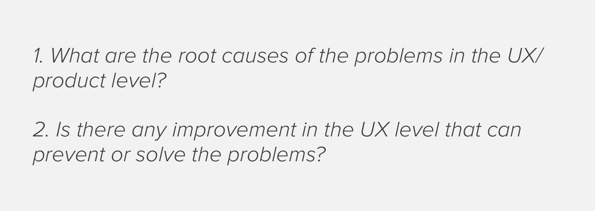

New User Engagement
My role & goals:The goal is to convert new users to unique bidders. Make it is easier for new users to find lots they like is the key responsibility for my as the UX designer.
Success metrics:
Increase on unique bidders.
Define the problems
I asked 3 questions to define the problems:

The problem most no-loged in users lands on closed auction and lots page. They are not clear about an auction lot is closed. And they are not engageable as they cannot bid and also do other auctions.
Ideation and sketch
high drop-off rates, so that there 1. be clear it is closed 2. have similar lots 3. other lots in the same auction that is open 4. other auction in the same category 5. all category
Validation with A/B expermients
similar lots
not significant butalso have not effect.
all categotirse
not significant butalso have not effect.
other lots in the same auction
not significant butalso have not effect.
other auctions
not significant butalso have not effect.
finaly design
Increase on unique bidders.
Next step
Increase on unique bidders.
Lessons learned
google analysis to make a big impact ...
test so that mot over whelmed. ...
explore more browsing UX ...